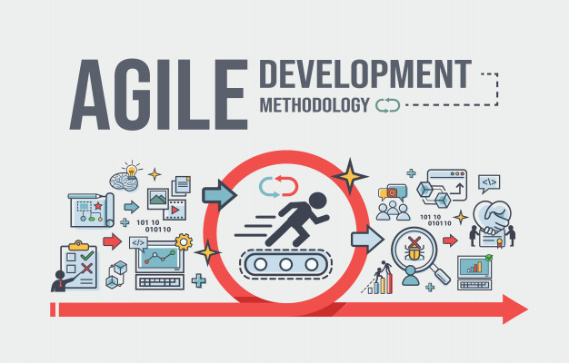
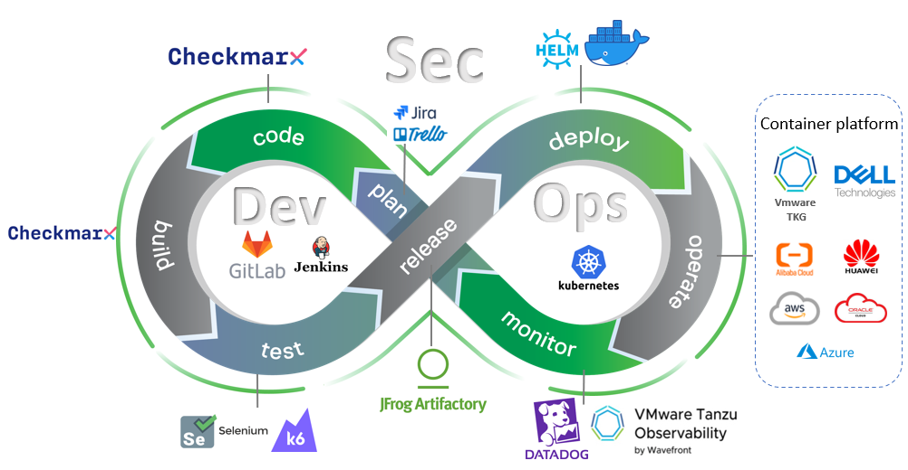

Não existe uma única "Metodologia em programação local", pois há diversas abordagens e metodologias no desenvolvimento de software. No entanto, eu posso discutir vantagens e desvantagens de algumas abordagens comuns. Vou mencionar algumas metodologias populares e destacar pontos gerais, mas é importante notar que a escolha da metodologia pode depender do contexto, do projeto e das preferências da equipe. Aqui estão algumas metodologias comuns:
Cascata (Waterfall):
A abordagem em cascata, também conhecida como modelo cascata, é uma metodologia de desenvolvimento de software que segue uma sequência linear e sequencial. Nessa abordagem, cada fase do ciclo de vida do desenvolvimento é tratada como uma fase separada, e o progresso flui em uma única direção, sem retornos às fases anteriores.

Vantagens:
Estrutura simples e fácil de entender.
Requisitos bem definidos no início do projeto.
Desvantagens:
Dificuldade em acomodar mudanças nos requisitos durante o desenvolvimento.
Pode levar a longos períodos sem uma versão funcional do software.
Requisitos bem definidos no início do projeto.
Pode levar a longos períodos sem uma versão funcional do software.
Desenvolvimento Iterativo:
O Desenvolvimento Iterativo é uma abordagem metodológica na programação que envolve a repetição de ciclos de desenvolvimento para aprimorar gradualmente um sistema. Ele contrasta com abordagens tradicionais de desenvolvimento de software, como o modelo em cascata, que seguem uma sequência linear e rígida de fases (como análise, design, implementação, teste e manutenção).

Vantagens:
Adaptação a mudanças nos requisitos é mais fácil.
Entregas incrementais permitem avaliação contínua.
Desvantagens:
Pode haver desafios ao integrar módulos incrementais.
Requer uma equipe flexível e adaptável.
Entregas incrementais permitem avaliação contínua.
Requer uma equipe flexível e adaptável.
Desenvolvimento Ágil:
O Desenvolvimento Ágil é uma abordagem metodológica na programação, a qual se concentra na entrega incremental e interativa de software, priorizando a colaboração constante com o cliente e a capacidade de resposta a mudanças nos requisitos. O Manifesto Ágil, um documento que delineia os valores e princípios fundamentais do desenvolvimento ágil, foi criado por um grupo de desenvolvedores em 2001.

Vantagens:
Resposta rápida a mudanças nos requisitos do cliente.
Colaboração intensiva entre clientes e desenvolvedores.
Desvantagens:
Pode ser difícil para equipes grandes e distribuídas.
Requer uma comunicação eficiente.
DevOps:
DevOps é uma cultura e conjunto de práticas que visam melhorar a colaboração e a comunicação entre as equipes de desenvolvimento (Dev) e operações (Ops), promovendo a automação e a entrega contínua de software. O termo "DevOps" é uma combinação das palavras "desenvolvimento" e "operações". O objetivo principal é superar as barreiras tradicionais entre desenvolvimento e operações para acelerar o ciclo de vida do desenvolvimento de software e melhorar a eficiência operacional.

Vantagens:
Integração contínua e entrega contínua permitem liberações rápidas.
Maior colaboração entre desenvolvimento e operações.
Desvantagens:
Implementação inicial pode ser complexa.
Requer uma cultura organizacional que apoie a automação.
Maior colaboração entre desenvolvimento e operações.
Requer uma cultura organizacional que apoie a automação.
Modelo em Espiral:

O Modelo em Espiral é um modelo de desenvolvimento de software que combina elementos do modelo de cascata com a capacidade de lidar com mudanças, nos requisitos ao longo do tempo. Ele foi proposto por Barry Boehm em 1986 e é uma abordagem iterativa e incremental para o desenvolvimento de software. O modelo em espiral é representado por uma espiral crescente, onde cada volta da espiral representa uma fase no ciclo de vida do desenvolvimento.
Vantagens:
Abordagem iterativa com foco na mitigação de riscos.
Adaptação a mudanças é incorporada no modelo.
Desvantagens:
Pode ser complexo e difícil de gerenciar.
Requer uma análise de riscos cuidadosa.
Adaptação a mudanças é incorporada no modelo.
Requer uma análise de riscos cuidadosa.
Kanban:
O Kanban é uma metodologia de gestão visual originada no Japão, inicialmente aplicada em processos de produção,como na fabricação de automóveis na Toyota. No contexto do desenvolvimento de software, o Kanban é uma abordagem ágil que visa otimizar o fluxo de trabalho, melhorar a eficiência e facilitar a gestão visual do trabalho em andamento.
Vantagens:
Visualização clara do fluxo de trabalho.
Adaptação contínua às mudanças nas prioridades.
Desvantagens:
Pode não ser ideal para projetos altamente complexos.
Pode exigir uma boa comunicação entre os membros da equipe.
Adaptação contínua às mudanças nas prioridades.
Pode exigir uma boa comunicação entre os membros da equipe.
| Referencias: | ChatGPT | ChatGPT |
| Catalogo Nacional de Qualificacoes | ||